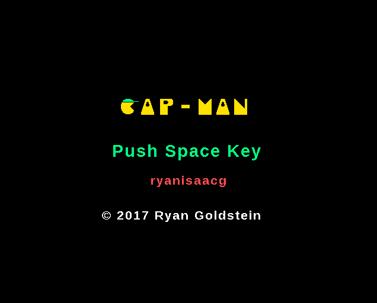

Ryan Goldstein: CapMan
A gravitational twist on a popular arcade game
 Written In
This project was actually originally written in C++14 with the SFML library. Why does it exist?
I had an interesting idea and wanted to sharpen my C++ skills. How does it work?
The player collects dots and avoids ghosts to complete levels.